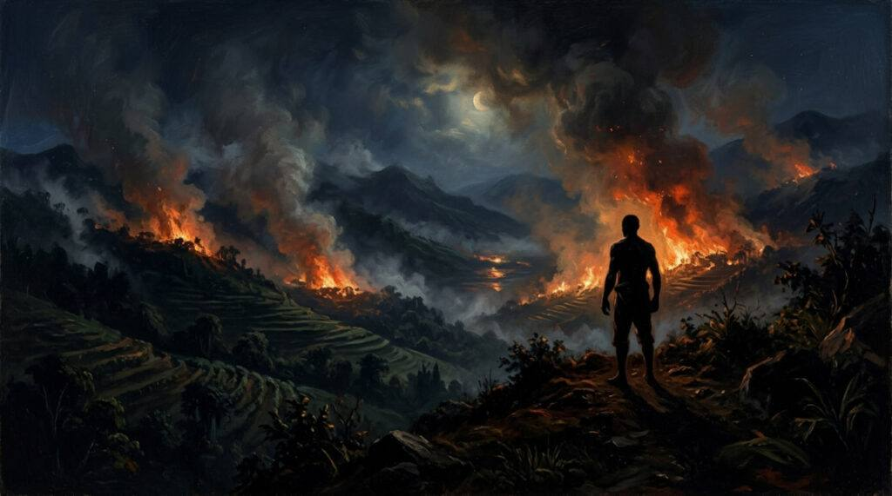
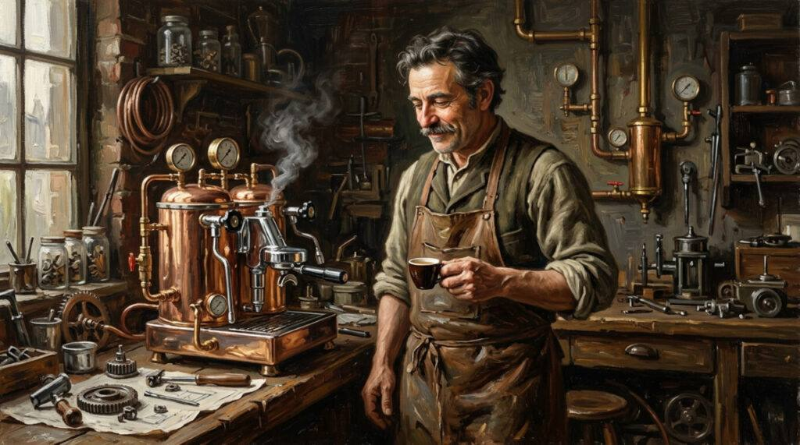
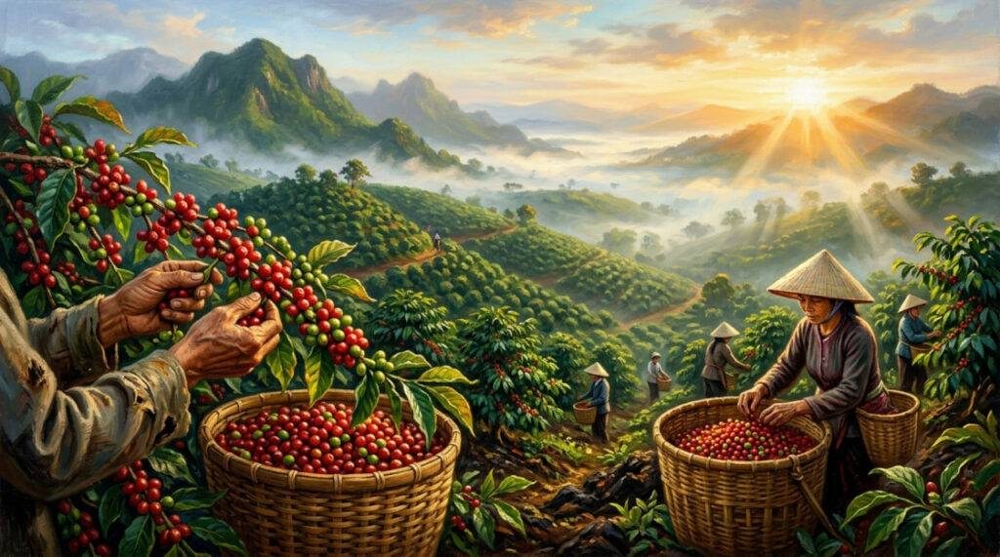
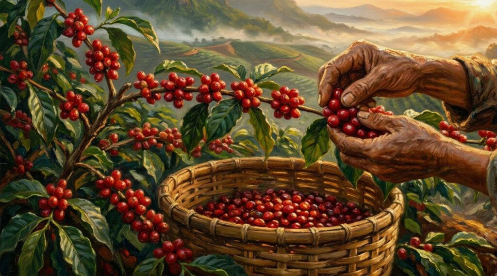

From an Ethiopian highland to 2.25 billion cups a day — the drink in your hand has one of the strangest, darkest, and most beautiful stories in human history.

On the night of August 14, 1791, in a forest clearing somewhere in the mountains of Saint-Domingue — the island we now call Haiti — a group of enslaved men and women gathered in secret. They lit torches. They made a vow. And before dawn, 900 coffee plantations were burning.
That island, at that moment in history, was producing 60 percent of all the coffee consumed in Europe. The hands that picked those red cherries, hauled those sacks, and fed the morning cups of Paris and London and Vienna — those hands belonged to people who were not free.
This is the part of coffee’s story that tends to get left out.
Most histories of coffee are pleasant. A dancing goat, a wise Arab mystic, a charming Italian café. All of that is real, or close enough to real. But coffee’s story is also the story of empire, exploitation, bans, and revolutions — a drink so powerful that kings feared it, so seductive that even the people who banned it could not stop drinking it.
The cup in your hand has traveled 1,200 years to reach you. Here is where it began.
Key Takeaways
- Coffee as a brewed drink originated not in Ethiopia but in 15th-century Yemen, among Sufi mystics who used it to pray through the night.
- The Kaldi goatherd legend was invented by a European writer in Rome in 1671 — it appears in no earlier Arab source.
- By 1789, the French colony of Saint-Domingue (Haiti) produced 60% of Europe’s coffee, grown by over 465,000 enslaved Africans.
- Every cup of coffee drunk in an Enlightenment-era London coffeehouse cost one penny — the same price as entry to intellectual debates that shaped the modern world.
- Lloyd’s of London, the London Stock Exchange, and the auction houses Sotheby’s and Christie’s all trace their origins to 17th-century coffeehouses.
- Vietnam became the world’s second-largest coffee producer in a single generation after the 1986 Đổi Mới reforms — and in 2025 exported US$8.92 billion worth of coffee.
- A 2025 study published in Nature Research Intelligence found that morning coffee consumption is significantly linked to lower cardiovascular and overall mortality.
Before There Was a Morning, There Was This Plant
Wild Coffea arabica grows today exactly where it has always grown: in the cool, shaded highlands of southwestern Ethiopia, in a region the Oromo people call Kaffa — altitude 1,400 to 2,100 meters, misty and green and ancient.
The plant is old. Extraordinarily old. A 2024 genetic study by researchers at the University of Buffalo, published in Nature Genetics, traced arabica’s origins and estimated the species to be between 610,000 and one million years old — which would make it older than our own species, Homo sapiens. Whether that figure holds up to scrutiny, the broader point is striking: the bush in your coffee bag has been on this planet far longer than anyone who has ever drunk from it.
The Oromo people of these highlands did not brew coffee. They ate it. Married women would bite open ripe coffee cherries, toast the seeds on a clay griddle, then mix the crushed paste with pure ghee — clarified butter, golden and rich. The mixture was rolled into balls the size of lemons, wrapped in leather pouches, and carried by warriors and long-distance traders as portable energy. Protein, fat, sugar, and caffeine in one compact package. British explorers were still observing this practice in the 18th century.

There is a quiet Oromo creation legend: the god Waaqa wept at the grave of a man he loved, and from his tears, the first coffee plant grew. It is a gentler origin story than the Kaldi legend — and far better documented. The Kaldi goatherd tale, beloved worldwide, was invented by a Maronite Christian professor named Antoine Faustus Nairon in a 1671 treatise printed in Rome. It appears in no Arabic source from any earlier period. This is the story Europe told itself. The actual beginning is quieter: a mother, a fire, and a warrior walking into the morning.
What’s striking here is that for centuries, Ethiopia had coffee and the world didn’t, because nobody thought to add hot water. That one small leap — dissolving the bean into liquid — would eventually change the shape of civilization.
The crossing from Ethiopia to Yemen happened sometime in the early-to-mid 1400s, across the narrow Bab al-Mandab strait — the “Gate of Grief” — that separates the Horn of Africa from the Arabian Peninsula. And that is where the story of coffee as a drink truly begins.
The Night the Mystics Stayed Awake
Picture a small mosque on the outskirts of Aden, Yemen. The year is around 1454. It is well past midnight. A hundred men sit in rows on the floor, swaying slowly. In the center of the room, a large red clay pot sits over a low flame. A single wooden dipper passes from hand to hand. The men drink, and begin to chant: La ilaha illa Allah. No god but God. Their voices grow louder. The chanting builds.
This was the dhikr — an all-night meditative ritual practiced by Sufi Muslims, a form of prayer through repetition and presence. It required staying awake for hours. The body’s natural demand was to sleep. Coffee solved this problem.
The Sufi scholar Jamāl al-Dīn al-Dhabhānī, mufti of Aden (died 1470), is credited by scholars as one of the first figures to adopt coffee in the Yemeni Sufi tradition. A second figure, Abū’l Ḥasan ʿAlī ibn ʿUmar al-Shādhilī, remains the patron saint of coffee growers and drinkers in the Islamic world to this day — in Algeria, coffee is still sometimes called shadhiliyye in his honor.
The Arabic word they gave the drink was qahwa. This is significant: in pre-coffee Arabic, qahwa already meant wine. The Sufis were naming their new drink “the wine of Islam” — the halal intoxicant, the permissible stimulant that replaced the forbidden grape. The word crossed into Ottoman Turkish as kahve, then into Dutch as koffie (attested 1582), and reached English in 1598 as the word we use today.
The early Yemeni coffee was not what we would recognize. The first brew was called qishr — made from the dried husks of the coffee cherry, lighter and fruitier than the roasted-bean drink we know. The shift to roasting the beans themselves came later and changed everything about the flavor.
From the mosques, coffee moved into the streets. Coffeehouses appeared in Mecca by the late 1400s, then in Cairo near al-Azhar University by the early 1500s. The Ottoman historians record two Syrian merchants — Hakam of Aleppo and Shams of Damascus — opening the first coffeehouses in Istanbul in 1554 or 1555, in the Tahtakale district. Their shop was soon nicknamed mekteb-i irfan: “the school of the wise.” It is a phrase that will echo for centuries.
From Yemen, the beans departed through a single port: al-Mukhā — Mocha — on the Red Sea coast. For roughly 200 years, Yemen enforced a strict monopoly. Beans destined for export were parboiled or sun-dried before shipping, so they could not germinate elsewhere. For two centuries, if you drank coffee anywhere on Earth, every bean in your cup had passed through this small port city.
The Drink That Rulers Feared
Coffee has been banned more times than almost any other substance in history — and the bans almost always failed, for the same reason.
The first major prohibition came in June 1511, in Mecca. A city inspector named Khair Beg was walking home from the Grand Mosque one evening when he passed a dark corner and saw a group of men sitting in a circle, passing a cup. When they saw him, they blew out their lanterns. Khair Beg convened a panel of scholars and physicians the next morning. Was coffee like wine? Was it intoxicating? Was it forbidden? The panel — under pressure — said yes. Coffee houses were closed. Beans were burned in the street. Drinkers were beaten.
The ban lasted weeks. The Sultan of Cairo, himself a coffee drinker, was furious when news reached him. He overturned the ruling by dispatch. Khair Beg was demoted.
The pattern would repeat again and again. Sultan Murad IV of the Ottoman Empire (ruled 1623–1640) issued a death penalty for coffee drinking. He reportedly walked the streets of Constantinople at night in disguise, carrying a large sword, executing drinkers on the spot. The stories grew tall in the telling. But every historian agrees on this: people kept drinking. They drank behind locked doors, in private homes, in whispers.
King Charles II of England tried to close all London coffeehouses in 1675, concerned about the “spreading of false news” and radical plots. The ban lasted eleven days before the public outcry forced its reversal.
What this pattern tells us is something worth pausing over. The authorities were right that coffeehouses were dangerous — to them. They were right that ideas generated inside those rooms would threaten the established order. They were simply unable to stop it. People, given a warm room, a stimulating drink, and strangers to talk to, will find a way to think. The banning of coffee is one of history’s most consistently unsuccessful projects.
The Penny University: How Coffee Built the Modern World
By 1652, a man named Pasqua Rosée — a Levantine servant to a British merchant who traded in the Middle East — had opened the first coffeehouse in London, a small wooden shack wedged against the wall of St. Michael’s Churchyard in Cornhill. Within two years, he was reportedly selling 600 cups a day. Within a decade, London had hundreds of coffeehouses. By the end of the 17th century, some estimates suggest more than 2,000 coffeehouses operating in the city.
Entry cost exactly one penny — the price of a cup of coffee. For that penny, a man could sit all day. He could read any newspaper in the house. He could speak to any other customer, regardless of social class. These were places of radical equality in a profoundly hierarchical society. They became known as “penny universities.”
The detail most historians overlook is just how much of the modern financial world was born in these smoky rooms. Lloyd’s Coffee House, opened by Edward Lloyd around 1686 on Tower Street, became the preferred gathering spot for sailors, merchants, and ship insurers. Lloyd fostered this by installing a pulpit from which maritime news and auction prices were announced. The dealings that took place there gave rise to Lloyd’s of London, now the world’s largest insurance market. The London Stock Exchange grew from Jonathan’s Coffee House in Exchange Alley, around 1680 — stockbrokers initially met there because they were banned from the Royal Exchange for their “rude manners.” Sotheby’s and Christie’s, the world’s most famous auction houses, trace their roots to coffeehouse auction rooms of the same era.

This is almost funny, if you think about it. Two of the most venerable institutions in British finance — Lloyd’s and the Stock Exchange — were born not in boardrooms, but in coffeehouses where anyone with a penny could walk in off the street.
Scientists gathered too. Members of the Royal Society met in coffeehouses to debate experiments. Isaac Newton is said to have once dissected a dolphin on the table of the Grecian Coffeehouse near Fleet Street. Edmund Halley’s encouragement of Newton to write and publish the Principia Mathematica — arguably the most important work of physics in history — reportedly began over coffeehouse discussions.
Before coffee, most people in England were, as one historian put it, “either slightly or very drunk all of the time.” Water was unsafe to drink; ale was safer. Coffee replaced alcohol as the daytime drink of the working and intellectual classes. The effect on mental clarity — and by extension on economic productivity, scientific progress, and political discourse — was, by any honest measure, extraordinary. The Enlightenment, in significant part, ran on caffeine.
The Shadow in the Cup: Coffee and the Slave Trade
And now the part of the story that the pleasant histories tend to rush past.
By the early 1700s, European demand for coffee had outgrown what Yemen could supply. The Dutch broke Yemen’s monopoly by smuggling live seedlings to their colony in Java (Indonesia) in the 1690s. The French planted coffee in the Caribbean. In 1723, a French naval officer named Gabriel de Clieu carried a single coffee seedling across the Atlantic in a glass box. The voyage was long and the ship ran short of water; de Clieu shared his own drinking ration with the plant, drop by drop, for weeks. That seedling survived. It became the parent of virtually every coffee tree in the Caribbean and, eventually, in the Americas.
It is a beautiful story. What followed was not.
The Caribbean colony of Saint-Domingue — the western half of the island we now call Haiti — became the most productive coffee-growing land on Earth. By 1788, this one small island was producing 60 percent of all the coffee consumed in Europe, as well as 40 percent of Europe’s sugar. At that same moment, over 465,000 enslaved Africans labored on the island’s plantations — roughly 90 percent of the colony’s entire population. Approximately 685,000 men, women, and children had been transported to the island during the 18th century alone. The mortality rate was staggering. For enslaved people on Saint-Domingue’s sugar plantations, the annual death rate ran at 6 to 10 percent — meaning the average person who survived the crossing could expect to live perhaps a decade.
The coffee drunk by Voltaire in his Paris café. The coffee that fueled Isaac Newton’s discussions at the Grecian. The coffee that Camille Desmoulins ordered at the Café de Foy on July 12, 1789 — two days before the Bastille fell — much of it came from these mountains. Grown by people who had no choice in the matter.
On the night of August 14, 1791, the enslaved people of Saint-Domingue rose. A leader named Toussaint Louverture emerged from their ranks. For thirteen years they fought — against France, against Britain, against Spain. Toussaint was eventually captured and died in a French prison in 1803, but he did not die before the idea was unstoppable. On January 1, 1804, Haiti declared independence — the first country in the Americas to abolish slavery by revolution, and the first Black republic in the world. At least 900 coffee plantations burned during the uprising.

The world’s coffee trade shifted south, to Brazil. Brazil would hold the crown of largest coffee producer ever since — but it too depended on enslaved labor until Princess Isabel signed the Lei Áurea on May 13, 1888: a two-sentence law that freed approximately 700,000 people. Brazil was the last country in the Western world to end slavery. It took 188 years and millions of lives for the global coffee trade to happen without chains.
The beautiful and the broken often grow on the same plant. That is not a metaphor. It is a fact, and the cup deserves that much honesty.
The Machine, the Powder, and the Green Mermaid
The 19th and 20th centuries transformed coffee from a handmade ritual into a global industrial product — and did so at remarkable speed.
In 1884, a Turin inventor named Angelo Moriondo patented a machine that used steam pressure to push water through ground coffee. His invention brewed in bulk. In 1901, a Milan engineer named Luigi Bezzera refined the design to produce single servings — a shot of coffee in 30 seconds, made expressly for one person. Bezzera and his partner Desiderio Pavoni presented the machine at the 1906 Milan World’s Fair, marketing the result as caffè espresso: coffee expressed, made quickly, for you alone. The word “espresso” carries all three meanings simultaneously — pressed out, fast, and personal. Modern crema-topped espresso as we know it required one more innovation: the piston-lever machine, developed by Achille Gaggia in 1948, which pressurized the water to 9 atmospheres and produced that distinctive foam.

The second great industrial shift came from war. In 1938, a Nestlé chemist named Max Morgenthaler developed a soluble coffee powder that would dissolve in hot water without a machine. He named it Nescafé. American soldiers in World War II carried tins in their packs across Europe and the Pacific. When they came home, the habit came with them. The world’s appetite for instant coffee — and by extension for Robusta beans, cheaper and more caffeinated than Arabica — exploded.
The third shift was cultural. In 1966, Dutch immigrant Alfred Peet opened Peet’s Coffee in Berkeley, California, bringing dark-roasted Arabica to a country that had grown accustomed to weak canned coffee. He personally trained three young entrepreneurs — Jerry Baldwin, Zev Siegl, and Gordon Bowker — who opened Starbucks at Seattle’s Pike Place Market on March 30, 1971, named after the first mate in Moby-Dick. A marketing director named Howard Schultz took a life-changing trip to Milan in 1983, fell in love with the Italian espresso bar experience, and in 1987 bought the company from its founders for $3.8 million. Today Starbucks operates in more than 80 countries.
There is a quiet irony in the fact that the most globally recognizable coffee brand was built by a man inspired by Italian coffee culture, which was itself built on espresso machines invented in Turin and Milan to serve working-class Italians quickly and cheaply. What Starbucks turned into a lifestyle brand, the original inventors meant as fast food.
The Mountain That Woke the World: Vietnam’s Coffee Story
Vietnam was not supposed to become a coffee superpower.
French Catholic missionaries brought the first Arabica trees to northern Vietnam in 1857. The French colonial administration later introduced Robusta to the Central Highlands in the early 1900s — particularly to the deep volcanic soil of Đắk Lắk province, where the climate proved ideal. Plantations expanded through the 1920s, then were shattered by decades of war. The Central Highlands were depopulated, the industry collectivized, production near-zero.
Then came Đổi Mới — “Renovation” — the 1986 economic reforms that privatized agriculture and opened Vietnam to markets. Within a decade, smallholder farmers in the Central Highlands replanted on a massive scale. By the mid-1990s, Vietnam had surpassed Colombia to become the world’s second-largest coffee producer — a rise from almost nothing in a single generation. Today, Vietnam produces roughly 40% of all Robusta coffee on Earth, the beans that power most of the world’s instant coffee and espresso blends. In 2025, Vietnam’s coffee exports reached a record US$8.92 billion — a 58.78% increase over 2024, according to industry data. The country now has over 500,000 coffee shops, from roadside stools to upscale chains.

To put that in perspective: the Central Highlands of Vietnam, a landscape that living memory recalls as a war-scarred evacuation zone, now feeds the morning cups of Europe, Asia, and the Americas.
And there is the egg coffee. In 1946, a bartender named Nguyễn Văn Giảng at Hanoi’s Sofitel Legend Metropole Hotel had no fresh milk. There was a war on. So he whipped egg yolks with sugar and condensed milk until they were pale and mousse-like, then floated the mixture on top of strong black Robusta. He called it cà phê trứng. His son still runs the original café at 39 Nguyễn Hữu Huân in Hanoi. You sit on a low plastic stool. Motorbikes roar past outside. The coffee comes in a small glass, resting in a bowl of warm water to keep it hot. A wartime improvisation became a national icon.
The Ethiopian proverb says: “Buna dabo naw” — coffee is our bread. In Vietnam, it might be said that coffee is the Central Highlands’ second independence.
What the Scientists Finally Confirmed
For most of its history, coffee was accused of being dangerous — a devil’s brew, a stimulant too powerful for Christian bodies, a threat to public order and female virtue. The German government tried to ban it specifically for women in the early 18th century; Johann Sebastian Bach responded by composing the Coffee Cantata (1732–1734), a comic opera whose aria declares: coffee is “sweeter than muscatel wine.” He performed it at Zimmermann’s café in Leipzig.
The science has since settled the question in coffee’s favor, with some nuance. A 2025 study reviewed in Nature Research Intelligence found that drinking coffee in the morning was significantly associated with lower cardiovascular and overall mortality — suggesting that the timing of consumption matters, not just the quantity. A comprehensive 2024 review in GeroScience (University of Oklahoma) found that moderate coffee intake — roughly three to five cups a day — is associated with reduced risk of type 2 diabetes, stroke, cognitive decline, liver disease, and several cancers. Both caffeinated and decaffeinated coffee showed benefits, pointing to the role of the more than 1,000 bioactive compounds in roasted beans beyond caffeine alone.

The mechanism for caffeine itself was worked out in 1819 by a 25-year-old German chemist named Friedlieb Ferdinand Runge. He had just demonstrated to the poet Johann Wolfgang von Goethe that belladonna extract could dilate a cat’s pupils. A delighted Goethe handed him a box of rare Arabian Mocha beans and said: “You can also use these in your investigations.” Runge isolated the alkaloid caffeine within months. Caffeine works by mimicking adenosine — the molecule that signals drowsiness as it accumulates through the waking hours — and occupying its receptors without activating them. The drowsiness signal is not countered; it is simply blocked. Runge died in poverty in 1867, never knowing that the compound he identified would one day be the most consumed psychoactive substance in human history.
He did not even get a pension for the discovery.
Frequently Asked Questions About Coffee History
Was coffee really banned, and why?
Coffee was banned multiple times, in multiple countries, for remarkably consistent reasons: rulers feared that coffeehouses encouraged free thinking, political dissent, and the spreading of news outside official channels. The Mecca ban of 1511 targeted “radical thinking.” The Ottoman Sultan Murad IV issued a death penalty for coffee drinking in the 1630s. King Charles II tried to close London’s coffeehouses in 1675, fearing they were centers of seditious plotting. Sweden banned coffee and all coffee equipment in the 18th century. Every single ban eventually failed — usually because the people imposing the bans also drank coffee and could not stop.
Is the Kaldi goatherd story true?
No. The legend of Kaldi — the Ethiopian goatherd who discovered coffee after his goats ate red berries and danced — was invented by a Maronite scholar named Antoine Faustus Nairon in a 1671 treatise printed in Rome. It appears in no Arabic source from any earlier period. The story was likely a European embroidery of older Sufi traditions. Scholars of coffee history treat it as an entertaining legend, not a historical account. What is documented is the Oromo people’s practice of eating coffee mixed with butter as a portable food, which is far older and better attested.
Where was coffee first drunk as a beverage?
The scholarly consensus places the first confirmed coffee drinking in 15th-century Yemen, among Sufi Muslim mystics who used it to stay awake during all-night prayer rituals. There is no confirmed archaeological or written evidence of coffee as a drink before the 15th century, despite the coffee plant being native to Ethiopia. A 2020 genetic study confirmed that the vast majority of all arabica coffee worldwide traces its cultivated origins to Yemen’s early farms.
Why does coffee have so many names — espresso, mocha, cappuccino?
Each name traces back to a specific place or inventor. “Mocha” comes from al-Mukhā, the Yemeni port that was the world’s sole coffee-export point for about 200 years. “Espresso” is Italian for “pressed out” (and also “fast” and “expressly for you”), coined when Luigi Bezzera and Desiderio Pavoni introduced their machine at the 1906 Milan World’s Fair. “Cappuccino” takes its name and its distinctive brown-and-white color from the habit of Capuchin friars, whose robes matched the color of espresso lightened with milk. “Americano” originated in World War II, when American soldiers in Italy diluted Italian espresso with hot water to replicate the weaker drip coffee they were used to back home.
How did coffee change world history?
Far more directly than most people realize. The London coffeehouses of the 17th and 18th centuries were the direct birthplace of Lloyd’s of London (insurance), the London Stock Exchange, Sotheby’s, and Christie’s. The French Revolution was partly incited by a speech delivered at the Café de Foy in Paris in July 1789. The Enlightenment — the philosophical movement that produced modern democracy, science, and economics — was conducted largely inside coffeehouses, where people of different classes could debate ideas as equals for the price of one penny. The historian Matthew Green has argued that the shift from ale to coffee as the daily drink of working Europeans produced a “dawn of sobriety” that made the economic and intellectual explosion of the 18th century possible.
Is Vietnam really a major coffee country?
The second-largest in the world, after Brazil. Vietnam produces approximately 40% of all Robusta coffee on Earth — the species used in most instant coffee and Italian espresso blends. This transformation happened in a single generation: before the 1986 Đổi Mới reforms, Vietnam’s coffee industry was essentially destroyed by decades of war and collectivization. In 2025, Vietnam exported US$8.92 billion worth of coffee — a figure that would have been unimaginable in 1985. The Central Highlands provinces of Đắk Lắk and Lâm Đồng are the heart of this industry, growing on volcanic soils at altitudes between 500 and 1,500 meters.
Is coffee actually good for you?
According to a 2024 comprehensive review published in GeroScience and recent work from Nature Research Intelligence, the answer is: more good than bad, at moderate intake. Three to five cups a day is associated with reduced risk of type 2 diabetes, several cancers, stroke, liver disease, and cognitive decline. A 2025 study specifically found that drinking coffee in the morning — rather than throughout the day — is linked to lower cardiovascular mortality. Both caffeinated and decaffeinated coffee show benefits, suggesting the health effects come from coffee’s 1,000-plus bioactive compounds, not caffeine alone. Pregnant women are advised to limit caffeine to under 200mg daily. For most healthy adults, moderate coffee is not just safe — it may actively extend life.
The Chain of People Behind Your Cup
Every history of coffee eventually arrives at the same place: the present moment, and the question of what the story means.
Here is what 1,200 years of coffee’s history actually shows: the drink has always been a mirror. When rulers were afraid of free thinking, they banned coffeehouses. When intellectuals needed a sober place to argue, they built them. When empires needed cheap labor, they enslaved people to grow the beans. When a war left a Hanoi bartender without milk, he whipped egg yolks into something extraordinary. When a generation of Vietnamese farmers needed a livelihood after decades of conflict, they planted coffee on hillsides and changed the global supply chain.
Coffee does not have values. The people around it do.
The cup in your hand this morning passed through dozens of hands before reaching yours. A farmer in Đắk Lắk or Kaffa or Minas Gerais who rose before dawn to check the cherries. A worker who dried the beans in the sun. A roaster who listened for the first crack at 200 degrees Celsius. A trader, a shipper, a barista. Most of them you will never meet. The cup is their collective labor, compressed into a few hundred milliliters of brown liquid.
The Ethiopian proverb has it right: “Buna dabo naw.” Coffee is our bread. It has been the bread of mystics and revolutionaries, of scientists and enslaved people, of warriors with butter balls and philosophers with penny-admission tickets. It remains, every morning, the bread of the world.
Lift the cup, then. You know now what you are holding.
Sources and Further Reading
- Ralph S. Hattox — Coffee and Coffeehouses: The Origins of a Social Beverage in the Medieval Near East (1985). University of Washington Press. [Scholarly consensus on Yemeni origins and ban history]
- Mark Pendergrast — Uncommon Grounds: The History of Coffee and How It Transformed Our World (1999, revised 2010). Basic Books.
- Brian Cowan — The Social Life of Coffee: The Emergence of the British Coffeehouse (2005). Yale University Press.
- Markman Ellis — The Coffee House: A Cultural History (2004). Weidenfeld & Nicolson.
- Matthew Green — “The Lost World of the London Coffeehouse.” The Public Domain Review (2013). [publicdomainreview.org]
- Duke University / Haitian Marronnage Project — Saint-Domingue slavery statistics. [sites.duke.edu/marronnagevoyages]
- Slaveryandremembrance.org — Haiti (Saint-Domingue) country article. Colonial Williamsburg Foundation.
- University of Florida — Haiti. Jeremie Papers. Latin American & Caribbean Special Collections. [guides.uflib.ufl.edu]
- USDA Foreign Agricultural Service — Vietnam: Coffee Annual (2025). [apps.fas.usda.gov]
- World Coffee Research — Vietnam Country Profile (2025). [worldcoffeeresearch.org]
- Lopes CR & Cunha RA — “Impact of coffee intake on human aging: Epidemiology and cellular mechanisms.” Ageing Research Reviews 102 (2024). PubMed.
- Britannica — History of Coffee; Espresso. Encyclopaedia Britannica. [britannica.com]
*This article was researched and written by the HitoCast editorial team. We cross-checked facts across 12 sources, including peer-reviewed journal articles on coffee’s health effects, academic histories of the Atlantic slave trade, USDA Foreign Agricultural Service reports on Vietnam, and museum and university archival sources on coffeehouse history. If you spot an error or have a source to recommend, please email us — we update articles regularly.
Watch the full HitoCast video:
Subscribe for more stories from the history of everyday things